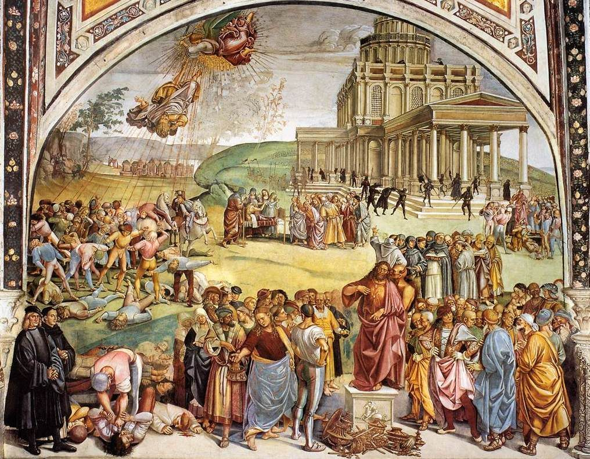

2 Thessalonians 2 — The Mister Translation

⚠ Painted for a cathedral chapel at the turn of the year 1500, the fresco gives the deceiver Christ’s own face and a devil for a prompter, with a temple behind and his fall above. ‘The one whose presence is by the working of Satan, with every power and signs and wonders of falsehood’ (verse 9).

Translator’s Notes
“Concerning the presence of our Lord Jesus Christ and our being gathered together to him.” “Presence” is parousia, as four times in the first letter (dictionary). Episynagōgē, “being gathered together,” stands in two verses: this one and Hebrews 10:25 (yet to come in this translation; dictionary). Its verb is the one Jesus uses of the angels who “will gather together his chosen from the four winds” at Matthew 24:31, and the gathering is the one of 1 Thessalonians 4:17, “together with them in clouds to meet the Lord.” The KJV reads “by the coming of our Lord Jesus Christ, and by our gathering together unto him”; the NWT 1984 reads “respecting the presence of our Lord Jesus Christ and our being gathered together to him.”
“Not to be quickly shaken from your mind or alarmed, whether by a spirit or by a word or by a letter as though from us.” Throeō, “be alarmed,” stands in three verses: Jesus’ “See that you are not alarmed” at Matthew 24:6 and “do not be alarmed” at Mark 13:7, and this one (dictionary). “A spirit” is a prophetic utterance, the kind 1 Thessalonians 5:19–20 told the readers not to quench or despise; the NIV reads “whether by a prophecy or by word of mouth or by letter,” the NWT 1984 “through an inspired expression or through a verbal message or through a letter.” ⚠ “A letter as though from us” is read two ways, as is the letter itself. Readers who hold that Paul wrote it hear a warning against a forged letter, or against his first letter misread; William Wrede argued in 1903 that this letter was itself written later in Paul’s name, and the debate he framed continues. This page sets out both and does not choose; the letter ends with a greeting “in my own hand” at 3:17.
“To the effect that the day of the Lord has come.” Enestēken is the perfect of enistēmi, to be present (dictionary). Its forms stand in six verses, and everywhere else they mean what is already here: “things present” at Romans 8:38 and 1 Corinthians 3:22, “the present distress” at 1 Corinthians 7:26, “the present evil age” at Galatians 1:4, and Hebrews 9:9. The rumor was that the day had arrived, not that it was near; Paul himself says “the day has drawn near” at Romans 13:12, with a different verb. The KJV reads “as that the day of Christ is at hand,” following the Byzantine “of Christ,” and the ASV “as that the day of the Lord is just at hand”; the NIV reads “asserting that the day of the Lord has already come.” The Greek reads kyrios, and the translation keeps “Lord,” as at 1 Thessalonians 5:2; the NWT 1984 reads “the day of Jehovah is here.”
“For it will not come unless the apostasy comes first.” The warning before it, against being deceived “in any way,” uses exapataō (dictionary). The Greek sentence never finishes, and “it will not come” supplies what is understood. Apostasia stands in two verses: this one and the charge that Paul taught “apostasy from Moses” at Acts 21:21 (dictionary). In Greek it is a revolt, political or religious, and here it has the article, as of something the readers already know. ⚠ Readers take it three ways. Most read a falling away from God or from the faith: the KJV “a falling away,” the NWT 1984 “the apostasy.” Some read a revolt against God more broadly: the NIV “the rebellion,” the Douay “a revolt,” after the Vulgate’s discessio. And some pretribulational writers, Thomas Ice among them, read a departure of the church itself, the gathering of verse 1, pointing to the Geneva’s “except there come a departing first”; the Geneva’s own chapter heading calls it “a departure from the faith,” and many pretribulationists keep “falling away.” This page sets out all three and does not choose.
“The man of lawlessness is revealed, the son of destruction.” “Lawlessness” is anomia (dictionary); the Byzantine text has hamartias, “sin,” and so the KJV and ASV: “man of sin be revealed, the son of perdition.” The NWT 1984 reads “the man of lawlessness gets revealed, the son of destruction.” “The son of destruction” is the Hebrew way of saying one bound for it, and Jesus uses the same phrase of Judas at John 17:12 (dictionary); the NIV reads “the man doomed to destruction.” He is “revealed,” apokalyptō, three times in vv3–8, from the root of the Lord Jesus’s own “unveiling” at 2 Thessalonians 1:7.
“Who opposes and lifts himself up above every so-called god or object of worship, so that he takes his seat in the temple of God, displaying himself as God.” “Lifts himself up” is hyperairomai, Paul’s “so that I would not lift myself too high” at 2 Corinthians 12:7 (dictionary); “so-called god” is the phrase of 1 Corinthians 8:5. Sebasma, “object of worship,” stands in two verses: the Athenians’ “things you revere” at Acts 17:23, and this one (dictionary). The picture is Daniel’s king who “shall exalt himself and magnify himself above every god” at Daniel 11:36, and the prince of Tyre who says “I am a god, I sit in the seat of God” at Ezekiel 28:2. The Byzantine text adds “as God”: the KJV reads “so that he as God sitteth in the temple of God, shewing himself that he is God.” The NIV reads “proclaiming himself to be God”; the NWT 1984 reads “publicly showing himself to be a god.”
Which temple? ⚠ Readers answer three ways. Some read the temple in Jerusalem, still standing when the letter was written, and recall that in AD 40 the emperor Gaius Caligula ordered his statue set up in it and died before the order was carried out (Philo, Embassy to Gaius; Josephus, Antiquities 18), and Jesus’ “abomination that desolates” standing “in a holy place” at Matthew 24:15. Some read God’s people, as at 1 Corinthians 3:16, “you are God’s temple.” Others read a picture of seizing God’s own place. This page sets out all three and does not choose.
Who is he? The word “antichrist” is not in this chapter: antichristos stands in four verses, all in the letters of John, among them 2 John 1:7, “This is the deceiver and the antichrist,” and 1 John 2:18, 2:22 and 4:3. Readers have still put names to the man of lawlessness, and some of those names have been used as weapons. ⚠ Medieval writers made him a Jew. Adso of Montier-en-Der’s tenth-century Letter on the Antichrist, the standard medieval treatment, says “Antichrist will be born from the Jewish people, specifically from the tribe of Dan,” and later German legend imagined Jews as his army, a tale Andrew Gow traced in The Red Jews (1995). The Reformers named the papacy: the Smalcald Articles (1537) call the pope “the very Antichrist,” and the Westminster Confession (1646) calls him “that Antichrist, that man of sin, and son of perdition,” a sentence many Presbyterian churches have since removed from their editions. Readers have also named Roman emperors, Nero among them. The text supports none of these identifications: it names no people, no office and no person, and the man it describes is still to be “revealed.”
“Do you not remember that while I was still with you I used to tell you these things?” The “we” of the letter becomes “I,” as at 1 Thessalonians 2:18, and “used to tell” is the imperfect, of telling that went on over time. The readers had heard the whole of it in person; the letter gives only the part they needed reminding of. The KJV reads “when I was yet with you, I told you these things”; the NWT 1984 reads “I used to tell YOU these things.”
“And now you know what restrains… only there is the one who restrains for now, until he is out of the way.” Katechō is the verb of “hold fast what is good” at 1 Thessalonians 5:21; here it is to hold back (dictionary). Verse 6 has the neuter, to katechon, “what restrains,” and verse 7 the masculine, ho katechōn, “the one who restrains”: a thing and a person, or a power and the one who embodies it. “Until he is out of the way” is ek mesou genētai, “comes to be out of the midst”; the KJV and ASV “until he be taken out of the way” supply a remover the Greek does not name. The KJV reads “only he who now letteth will let,” where “let” is the old English verb for hinder, the opposite of its modern sense; the ASV reads “that which restraineth,” the NWT 1984 “the thing that acts as a restraint,” and the NIV “what is holding him back.”
Who or what restrains? ⚠ The readers knew; later readers have had to guess. Tertullian, in On the Resurrection of the Flesh 24, asks, “What obstacle is there but the Roman state”; Augustine, in City of God 20.19, reports that some took it as the Roman empire and that some thought Paul “alluded to Nero,” and then says, “I frankly confess I do not know what he means.” The Scofield Reference Bible’s note on this verse (1917 edition) names “the Holy Spirit in the church,” removed when the church is gathered to the Lord. Many other candidates have been proposed, among them the preaching of the gospel, which “must first be proclaimed to all the nations” at Mark 13:10. This page sets out the readings and does not choose.
“The mystery of lawlessness is already at work.” Elsewhere Paul’s “mystery” is God’s hidden plan now made known, “God’s wisdom in a mystery” at 1 Corinthians 2:7 (dictionary); here it is a hidden working of lawlessness, already present before the lawless one is revealed. “Is at work” is energeitai, and the word family returns as “the working of Satan” in verse 9 and “a working of error” in verse 11 (dictionary). The KJV reads “the mystery of iniquity doth already work”; the NIV reads “the secret power of lawlessness is already at work.”
“The lawless one will be revealed, whom the Lord Jesus will kill with the breath of his mouth.” Anomos, “the lawless one,” is the man of verse 3 (dictionary). The line is Isaiah’s, of the shoot from the stump of Jesse: “with the breath of his lips he shall slay the wicked” at Isaiah 11:4, where the Greek Old Testament has anelei, “will kill,” the verb here. “Breath” is pneuma, Isaiah’s ruach. The Byzantine text lacks “Jesus” and has analōsei, “will consume”: the KJV reads “whom the Lord shall consume with the spirit of his mouth.” The ASV reads “whom the Lord Jesus shall slay with the breath of his mouth”; the NIV reads “will overthrow with the breath of his mouth.”
“And abolish by the appearing of his presence.” “Abolish” is katargeō, as at 1 Corinthians 15:24. Epiphaneia, “appearing,” stands in six verses, and this is the only one outside the letters to Timothy and Titus, among them 2 Timothy 1:10, “the appearing of our Saviour Christ Jesus” (dictionary). Here the two words of arrival stand together, the appearing and the presence. The KJV reads “shall destroy with the brightness of his coming”; the ASV reads “bring to nought by the manifestation of his coming”; the NWT 1984 reads “by the manifestation of his presence.”
“The one whose presence is by the working of Satan, with every power and signs and wonders of falsehood.” The lawless one has a parousia of his own, the same word as the Lord’s in the verse before: a counterfeit arrival. “Signs and wonders” are what the false christs give at Mark 13:22 and Matthew 24:24, and the beast performs “great signs” at Revelation 13:13. “Of falsehood” is pseudous: the KJV reads “lying wonders,” and the NIV “signs and wonders that serve the lie.” “Did not receive the love of the truth”: the KJV reads “they received not the love of the truth, that they might be saved”; the NWT 1984 reads “every unrighteous deception for those who are perishing.”
“God sends them a working of error, so that they believe the lie.” ⚠ The verb is present, pempei, “sends”; the Byzantine text has the future. Planē, “error,” is a leading astray, the “error” Paul disowns at 1 Thessalonians 2:3 (dictionary). The KJV reads “God shall send them strong delusion” and the ASV “God sendeth them a working of error”; the NWT 1984 reads “God lets an operation of error go to them,” and the TLB “God will allow them to believe lies,” making a permission of what the Greek states as a sending. Readers take the sending as judgment, God handing people over to what they chose, as “God gave them over” at Romans 1:24, or soften it as permission; this page keeps “sends” and sets out both. “The lie” has the article, as at Romans 1:25, “exchanged the truth of God for the lie.” At verse 12 the KJV reads “That they all might be damned”; the ASV reads “that they all might be judged.”
“But we ought always to give thanks to God for you, brothers loved by the Lord.” The sentence opens as the letter did at 2 Thessalonians 1:3, “We ought to give thanks to God always.” The first letter called the readers “brothers loved by God” at 1 Thessalonians 1:4; here they are loved “by the Lord,” ēgapēmenoi hypo kyriou, the words of the Greek Old Testament at Deuteronomy 33:12, where Moses blesses Benjamin as “the beloved of Jehovah,” and Paul is “of the tribe of Benjamin” at Philippians 3:5. Readers take “the Lord” here as Jesus, as in “our Lord Jesus Christ” in the next verse, or as the God of the blessing on Benjamin; the Greek reads kyrios, and the translation keeps “Lord.” The NWT 1984 reads “brothers loved by Jehovah”; the KJV reads “brethren beloved of the Lord.”
“God chose you as firstfruits for salvation.” ⚠ Nestle–Aland prints aparchēn, “as firstfruits”; Westcott and Hort, Tregelles and the Byzantine text print ap’ archēs, “from the beginning.” In copies written in capitals without spaces the two are APARCHEN and APARCHES, one letter apart. “Firstfruits” is Paul’s word for Christ at 1 Corinthians 15:20 and for the first converts of a region at Romans 16:5, “the firstfruits of Asia” (dictionary). The Vulgate has primitias and the NIV “chose you as firstfruits”; the KJV and ASV read “from the beginning,” and the NWT 1984 “from [the] beginning.” This translation follows its base text and gives the other reading here.
“In sanctification by the Spirit and in belief in the truth… for obtaining the glory of our Lord Jesus Christ.” “Sanctification” is hagiasmos, as in 1 Thessalonians 4:3–7 (dictionary); “obtaining” is peripoiēsis, as at 1 Thessalonians 5:9, “for obtaining salvation,” now “for obtaining the glory.” “Belief in the truth” answers those in verse 12 “who did not believe the truth.” The KJV reads “through sanctification of the Spirit and belief of the truth”; the NWT 1984 reads “by sanctifying YOU with spirit”; the NIV reads “that you might share in the glory of our Lord Jesus Christ.”
“Stand firm, and hold to the traditions that you were taught, whether by word or by our letter.” “Stand firm” is the verb of 1 Thessalonians 3:8, “if you stand firm in the Lord.” “Traditions” is paradosis, what is handed on (dictionary): Paul praises the Corinthians for holding fast to the traditions “just as I handed them to you” at 1 Corinthians 11:2, and warns at Colossians 2:8 against “the tradition of men.” The word carries no verdict of its own. “By word” is the spoken teaching of verse 5; “by our letter” is the letter they already had.
Traditions, or teaching? ⚠ Catholic writers appeal to this verse for Tradition handed on alongside Scripture; Protestant readers take the traditions to be the apostolic teaching itself, now kept in Scripture. This page sets out both and does not choose. The shelf shows the pressure on the word: the KJV and ASV read “hold the traditions,” and the NWT 1984 “maintain YOUR hold on the traditions”; the Geneva reads “keep the instructions,” and the NIV “hold fast to the teachings we passed on to you.”
“Now may our Lord Jesus Christ himself, and God our Father, who loved us and gave us eternal comfort and good hope by grace.” The prayer of 1 Thessalonians 3:11 named “our God and Father himself, and our Lord Jesus”; this one names the Lord Jesus Christ first. As there, what follows is singular: “who loved” and “gave” are singular participles, and “comfort” and “strengthen” in verse 17 are singular verbs. English cannot show it; Spanish can, «consuele… y los fortalezca.» “Comfort” is paraklēsis (dictionary), and “hope” is elpis (dictionary). The KJV reads “Now our Lord Jesus Christ himself, and God, even our Father”; the NWT 1984 reads “everlasting comfort and good hope by means of undeserved kindness.”
“Comfort your hearts and strengthen them in every good work and word.” “Strengthen” is stērizō, Timothy’s errand “to strengthen you” at 1 Thessalonians 3:2 (dictionary). The Byzantine text adds “you” and puts “word” first: the KJV reads “stablish you in every good word and work.” The ASV reads “establish them in every good work and word”; the NIV reads “strengthen you in every good deed and word.”
Patterns worth carrying forward
Where this translation keeps the exact words: “presence” for parousia, as in the first letter, for the Lord’s arrival and the lawless one’s alike; “alarmed,” as at Matthew 24:6; “has come” for enestēken, not “is at hand”; “the apostasy,” as at Acts 21:21; “the man of lawlessness” and “the lawless one”; “the son of destruction,” as at John 17:12; “lifts himself up,” as at 2 Corinthians 12:7; “so-called god,” as at 1 Corinthians 8:5; “what restrains” and “the one who restrains,” neuter and masculine kept apart; “out of the way,” with no remover supplied; “breath,” as in Isaiah 11:4; “abolish,” as at 1 Corinthians 15:24; “appearing,” as at 2 Timothy 1:10; “working” three times for one word family; “sends,” not “allows”; “the lie,” as at Romans 1:25; “loved by the Lord,” as in Deuteronomy 33:12; “firstfruits,” as at 1 Corinthians 15:20; “obtaining,” as at 1 Thessalonians 5:9; “traditions,” as at 1 Corinthians 11:2; and “strengthen,” as at 1 Thessalonians 3:2.
Echoes paid. The unveiling of the Lord Jesus at 2 Thessalonians 1:7, now matched by the revealing of the lawless one; the rumor, promised at the close of chapter 1, that the day had come; the presence and the gathering of 1 Thessalonians 4:17; the day of the Lord of 1 Thessalonians 5:2; “hold fast” from 1 Thessalonians 5:21, now holding back; “for obtaining” from 1 Thessalonians 5:9; “brothers loved” from 1 Thessalonians 1:4; the singular verb after two names from 1 Thessalonians 3:11; and “we ought to give thanks” from 2 Thessalonians 1:3.
Echoes planted. “The Lord is faithful, who will strengthen you” at 3:3; “the tradition” again at 3:6, against the disorderly; and the greeting “in my own hand,” “a sign in every letter,” at 3:17, the answer to “a letter as though from us.”
Next in this book: 2 Thessalonians 3, already on these pages. “Pray for us,” the disorderly, “if anyone is not willing to work, neither let him eat,” and the greeting in Paul’s own hand.